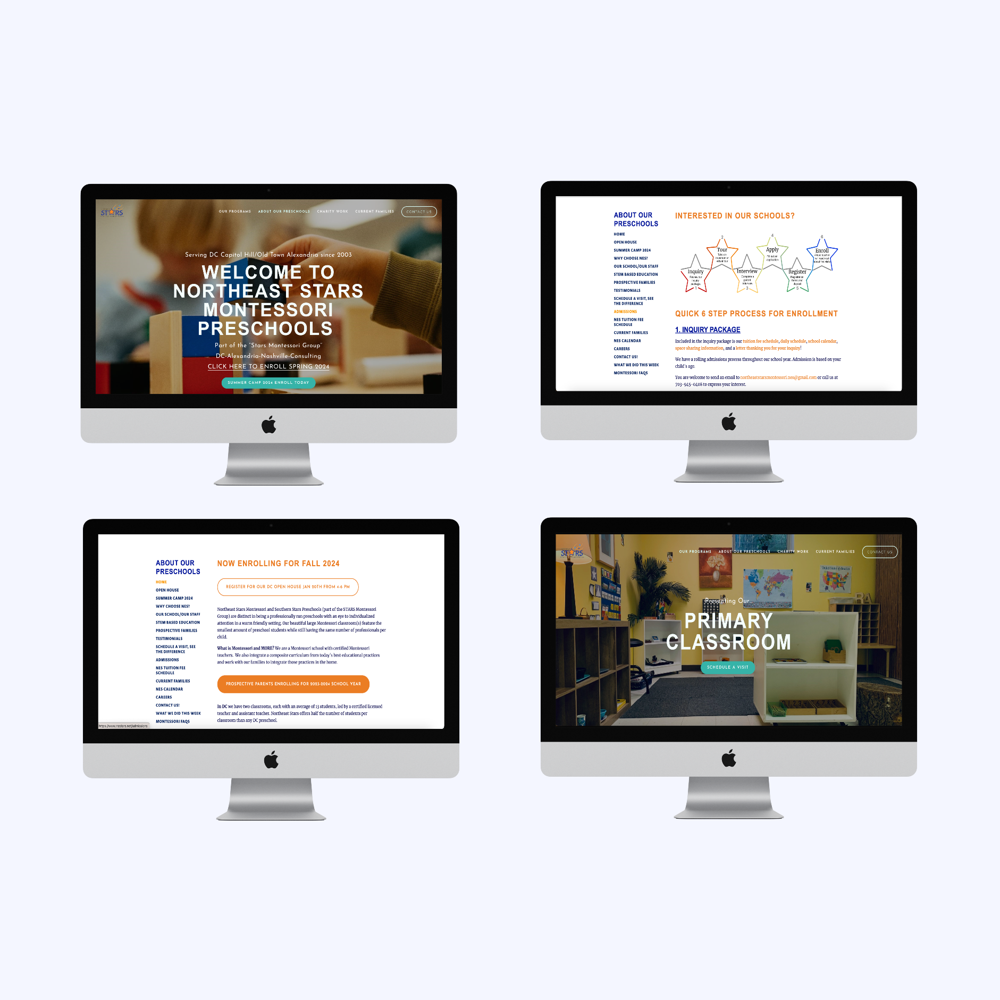

NES Montessori
Website Redesign
Redesigning Northeast Stars Montessori's website by using foundational UX principles and analyzing the preschool industry
website standards.
Take a look
Project Overview
In this project I worked with Northeast Stars Montessori staff to redesign their website. While the original website was informative
there were issues with the information architecture and overall design that made the website's information challenging and overwhelming to digest.
I did an extensive redesign of the entire website, upwards of 15 different pages. For the sake of concision I have included 8 of these pages below.
Project Timeline
One Week:
- 4 hours to write and revise a brief
- 4 days to complete a redesign
- 1 day to consult and revise the redesign with the NES staff.
Primary Roll
Industry research and Website Redesign. I had previous experience redesign websites from my Human-Centered Design course.
During that time I learned
how to analyze industry standards for different types of websites and emulate those designs (Following the Heuristic UX Law "Jakob's Law")
Strengthened Skills
Understanding of UX principles, information architecture/layout, project strategy and organization, information analysis and synthesis informing design,
collaboration with clients